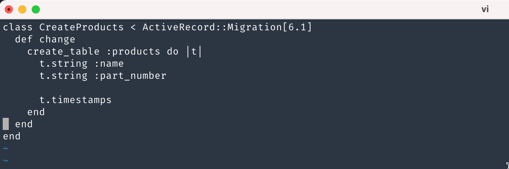
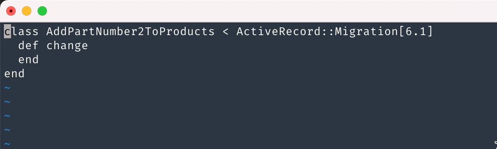
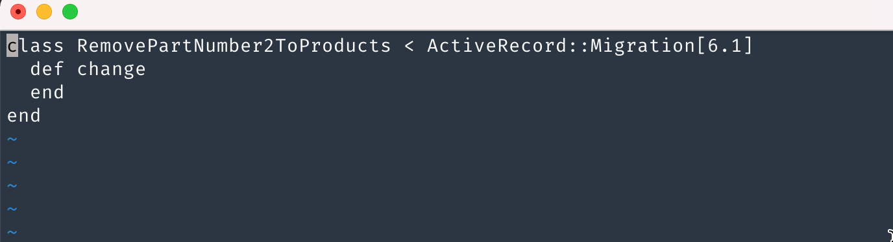
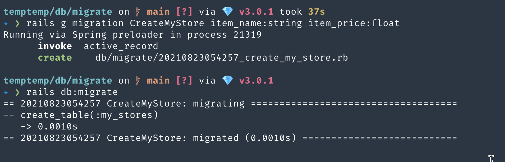
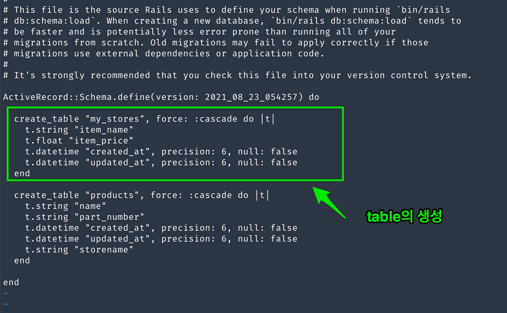
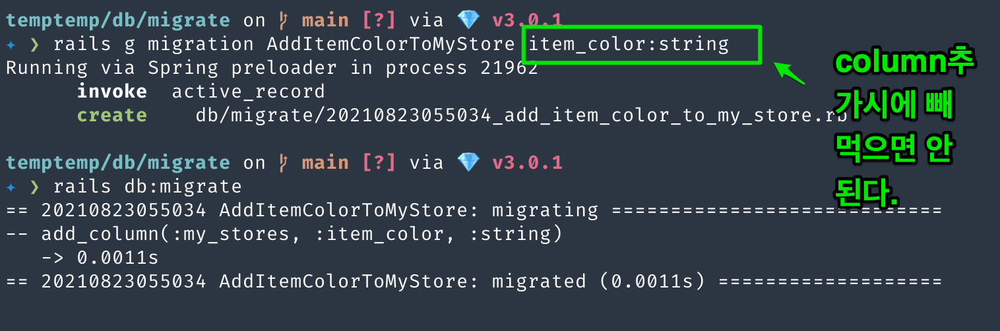
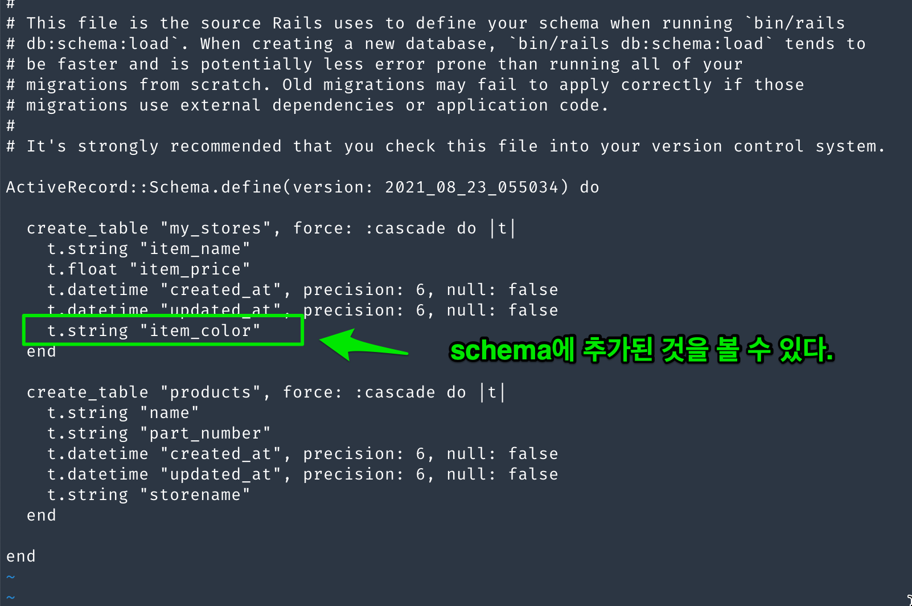
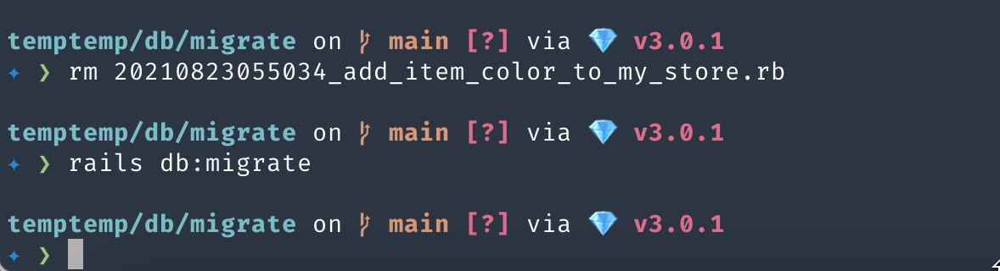
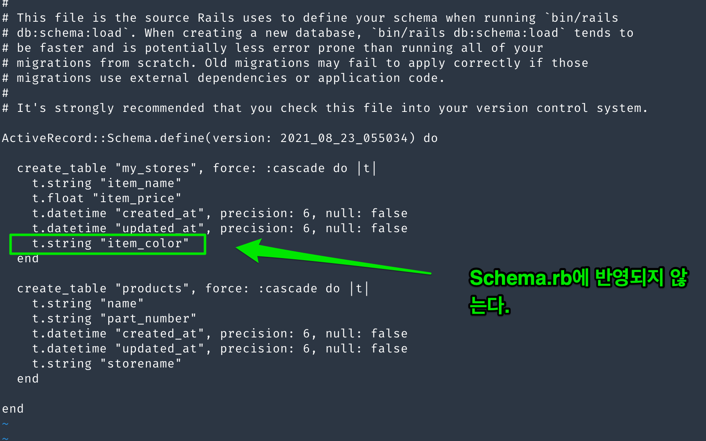

Model
Table of Contents
1 Model과 DB table만들기
아래에서도 말하겠지만, rails에서 db table을 만드는 방식은 3가지가 있다.
- 1) rails g model model명 fields명: type … => 이것은 model파일과 migration(table을 만드는 sql)을 만든다.
- 2) rails g scaffold model명 fields명: type … => 이것은 model, controller, view, migration을 다 만든다.
3) rails g migration createTable files명:type … => 이것은 migration(table 만드는 sql) 을 만든다.
실전에서 만들 때는 이렇게 만들면 안 된다. 왜냐면, table의 field들은 다양한 속성을 지니고 있다. name:type만을 갖고 있지 않기 때문이다. 1),2),3) 어떤 식으로 만들더라도, 만든후에 migration을 수정해야 한다. null값이라던가, default값이라던가, unique속성, 여러가지 설정을 해야 한다. 바로 rails db:migration해선 안된다. 설정이 끝난 후에 rails db:migration해야 한다. 이것이 실수를 줄이는 길이다. rails db:migration을 하게 되면, schema에 적용이 되고, schema가 적용된 이후에 수정은 migration으로만 해야 하는데 이것이 쉽지 않기 때문이다.
2 migration 수정 참고 사항
rails db:migration전에 수정을 해야 한다고 했다. 어떻게 수정을 할 것인가? 하나의 예를 들어 보겠다.
class CreatePvModuleInspections < ActiveRecord::Migration[5.1] def change createtable "pvmoduleinspections", id: false, primarykey: :id do |t| t.primarykey :id, :unsignedinteger, null: false, autoincrement: true t.integer :pvmoduleid, null: false, index: true, unsigned: true, limit: 8 t.string :name t.datetime :inspectiondate t.text :measureimageresultdata
t.datetime :createdat, null: false, default: -> { 'CURRENTTIMESTAMP' } t.datetime :updatedat, null: false, default: -> { 'CURRENTTIMESTAMP' } end
addforeignkey :pvmoduleinspections, :pvmodules, column: :pvmoduleid end end
3 model conventions
Model class : 첫 글자는 대문자. Model class의 파일이름: 첫 글자는 소문자, 단수형 table: 첫글자는 소문자, 복수
4 Rails의 migration에 대해서1
Web programming을 할 때, db를 사용한다. 옛날에는 DB에 table을 만들고 column을 삭제하거나, column을 추가하는 작업을 sql문으로 직접 작업했다. mysql이면, mysql에 맞는 sql문을 사용했고, mssql이면 mssql에 맞는 sql문을 사용했다. sql문은 각각의 제품마다 고유한 형식을 갖는다. rails에서는 sql문법에 맞춰 개발자가 일일이 하나하나 작성하는것을 피했다. rails에서는 ActiveRecord라고 하는 class로 db를 제어하는 migrate file을 사용한다. 개발자는 table을 만들거나, column을 추가하거나, column을 삭제하는 sql문을 작성할 필요가 있다. 이럴때, rails는 sql문을 작성하는 것이 아닌, migration파일을 만든다. 즉 migration파일 = 순순 sql문장 이라고 보면 된다. migration을 만드는 방법은 다음과 같다.
[Table만들기]
- createTable명(table이름은 복수)
- (ex) rails generate migration CreateProducts name:string partnumber:string ;; Products란 table을 만든다. name과 partnumber라는 column을 만든다. timestamp는 자동으로 prefix된다.

Figure 1: create table
[Column추가]
- AddColumn명ToTable명(table명은 복수)
- (ex) rails generate migration AddPartNumber2ToProducts ;; Products란 table에 PartNumber2란 column을 추가한다. migration file에는 별다른 게 없다.

Figure 2: add column
[Column 삭제]
- RemoveColumnFromTable명
- (ex) rails generate migration RemovePartNumber2ToProducts ;; Products란 table에 PartNumber2란 column을 삭제한다. 이것도 migration파일에는 별다른게 없다.

Figure 3: remove column
[Column 수정]
- column수정은 좀 다르다. 우선 migration파일부터 만든다. 그리고 만들어진 migration file을 수정하는 식으로 처리한다.
- migration을 만들 때 change로 시작하는 migration을 만들고 수정하는 식으로 한다.
- (ex)
5 Rails의 migration에 대해서2
migration파일이 있다면, 이것은 순수 sql문이라고 보면 된다. 10개의 migration파일이 있으면, 10개의 table관련 sql문이 있다. 그정도다. 별다른 의미는 없다. 옛날에는 mysql db를 사용한다면 mysql sql문으로 table을 만들거나 column을 추가하는 real sql문을 사용했는데, migration파일은 순수 sql문이라면 실제 db와 어떻게 연결해서 table을 만들고, column을 추가, 삭제 하는가? rails db:migrate라는 명령이 그것을 해준다. rails db:migrate를 실행하면, rails는 database.yml를 읽는다. 여기에는 db adapter와 database,그리고 실제 연결된 db관련 정보가 있다. 이 정보를 바탕으로 migrate파일( 순수 sql문)을 db에 맞는 sql로 바꿔서 schema라는 real sql문장으로 만든다. 이것이 db:schema:dump라는 명려어다. 여튼 여러개의 migration파일들을 읽고 db:schema:dump로 schema.rb를 계속 update한다. rails db:migration은 최종적으로 이렇게 만들어진 schema.rb를 실행해서 실제 table을 만드는 것이다.
5.1 migration수행 예제
- table을 만드는 migration을 작성한다. (rails g migration CreateMyStore itemname:string itemprice:float)
- rake db:migration

Figure 4: migration

Figure 5: migration2
- column을 추가해 보자. (rails g migration AddItemColorToMyStore)
- rake db:migration

Figure 6: migration3

Figure 7: migration4
그런데 실수로 itemcolor라는 필드는 할 필요가 없는 것이였다. 어떻게 할까? migration을 지우고 다시 rails db:migrate를 하면 될까? 해보자.

Figure 8: migrate5

Figure 9: migrate6
그렇다. 수동으로 지우고 db:migration하면 반영되지 않는다. 무조건 migration파일을 만들어서 지워야 한다.
6 Rails의 model에 관해서
6.1 model만들기
우리는 model을 만들때, rails g model User와 같이 generator를 통해서 만든다. 혹은 rails g scaffold User와 같이 만들 수 도 있다. model이나 scaffold를 만드는 것은 db 테이블도 같이 만드는 것이기 때문에 반드시 column을 나열해줘야 한다.
rails g model User name:string age:integer
그런데, 이렇게 generate model, scaffold model을 만들면 table을 만드는 sql문 migration이 하나 생긴다는 것이다.
7 에러 1(rails db:migrate시 발생하는 에러)
어떤 식의 에러인지는 모르겠지만, 지금 생각할 수 있는것은…
- migration파일을 rails g model, rails g scaffold, rails g migration…등을 써서 만들고, rails db:migrate를 했을 때 에러가 나는 경우, 어떻게 해야 할까? 이렇게 에러가 나는 경우는 migration 파일이 잘 못된 경우로 봐야 한다. 그래서 migration을 지우고 다시 생성하는게 유일한 해결책인 듯 보이지만, 이것은 좀 살펴봐야 한다. 어떤 식으로 migration file을 생성했는지를 알아야 하기 때문이다. 단순히 rails g migration으로 만들어진 migration파일이었다면 rails db:migrate시 에러가 나는 것은 해당 migration을 지우고 다시 만들면 깨끗이 해결된다. 그런데 만일 rails g model 로 만들어졌다면, 문제가 좀 다르다. rails g model은 model파일과 migration파일을 만들기 때문에 migration만 지우고 rails db:migrate하면 다시 에러가 생기기 때문이다. 이럴 때는 rails destroy model를 실행해야 한다. scaffold도 동일하다. rails destroy scaffold 로 지워야 한다.
다시 정리하면,
- rails g migration CreateTable, rails g migration AddColumnToTable, rails g migration RemoveColumnFromTable 로 만든 경우 => migration파일을 지운다.
- rails g model Model명 으로 만든 경우 => rails destroy model Model명 으로 지운다.
- rails g scaffold Resource명 으로 만든 경우 => rails destroy scaffold Resource명 으로 지운다.
8 timestamp에 관해서
timestamp는 :createat과 updateat이 자동으로 만들어진다. 하지만 data가 입력될때, 시간이 자동으로 입력되진 않는다. 그래서 RemoveTimestampsTable로 timestamps를 지우고, AddDetailsToTable로 2개의 column을 추가해야 한다. 예를 들어, mystores라는 table에 있는 Timestamps라는 field를 지운다고 하자. 그리고 2개의 column을 추가한다고 하자. 해당 명령어를 입력하고 name과 type을 명시하는 것을 잊지말자.
RemoveTimestampsFromMyStore timestamp t.datetime :createdat, null: false, default: -> { 'CURRENTTIMESTAMP' } t.datetime :updatedat, null: false, default: -> { 'CURRENTTIMESTAMP' }
9 timestamp와 column modifiers